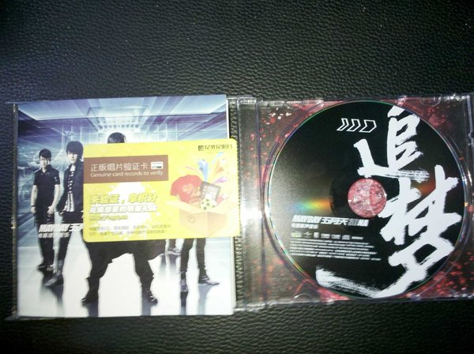

今天下午仔细的听了五月天的这张专辑。这张专辑在纯粹的五迷里貌似评分不高，豆瓣音乐里的评分也可以 看出这个事实，不过我还是想把它送给你，来支持你，陪你一起追梦。

有些人会说这张专辑的五月天趋于商业，脱离了最初的品质。不过对我来说，这张专辑有知足、倔强、温柔、 天使、突然好想你，这样就够了。就是因为这几首歌我喜欢上了五月天，或者从更本质的层面上来说，听这 几首歌的时候我特别的想你。
天边风光身边的我
都不在你眼中
你的眼中藏着什么
我什么都不懂
没有关系你的世界
就让你拥有
不打扰是我的温柔
笨蛋还记得温柔么？恩恩。当时你喜欢我的最主要原因就是因为我是第一个符合你心中温柔感觉的男生吧。 那时候的我们是多么的喜欢温柔，那时候的我们都以这里的温柔为爱情理想吧。真是笨笨的，还没有享受 在一起的感觉却要以离开的温柔来表达深深的爱。后来我们还一起唱的 SHE 的谢谢你的温柔，哈哈，我们 当时是有多喜欢温柔这首歌啊。那时候的我们好年轻好幼稚，什么都不懂。其实爱到深处，既是温柔。
那天你和我那个山丘
那样的唱着那一年的歌
那样的回忆那么的足够
足够我天天都品尝着寂寞
在一起那么长时间了，真的很感谢一直有你陪着我。这样的爱情此生足矣，所以还在乎什么其他的东西。 虽然目前我们还是不能在一起，或者说在我毕业前我们还是不能真真切切的在一起，但是我一直都坚信我们 会在一起，就算为此放弃一些东西，也是非常值得的。所以笨蛋，你愿意和我在一起么？
本来准备昨晚写完的，可是写完上面的就睡着了。原谅我笨蛋，好困好困。下周要汇报工作、准备面试、还要 准备分享，反正乱七八糟的事情一堆。烦死了。
现在是上午10点07分，你起床了吗？是不是又去山大看书去了。好辛苦，其实无论是去年还是今年都不希望你 考研。考研是个体力活，你那么弱或者说你在我心中是那么宝贵，我真的不舍得让你那么辛苦。
我和我骄傲的倔强
我在风中大声的唱
这一次为自己疯狂
就这一次我和我的倔强
考研就是你所坚持的。既然是你所坚持的，我也不能极力反对。两个人在一起就意味着妥协，不管是向生活妥协， 还是向梦想。
小学姐是多么一个执念的人啊。
还记得你说我不懂你的执念么？我还专门去百度百科查了执念。执念是一种态度，对待自己，对待他人， 对待社会，对待生命的态度，是个人存在的证明，是个人判断善恶的标准。没有执念的人没有标准。我知道你是 一个很要强很坚持的人，可我就是认为这样的你会很辛苦，这样的你会让爱你的人心疼，仅此而已。不过可能我 又太自我了吧。对不起笨蛋，我总是一个自我的人。
好了。进入正题。
后青春期的诗。
后青春期的诗，以出头天、你不是真正的快乐、突然好想你为主打，并不是在歌颂、也不是在缅怀。
笨蛋，是什么时候开始我变的这么会说好听的了？其实也不是一般意义上的好听的。只不过我现在越来越能把心里 想说的跟你说。这么多年来，可能有过很多的矛盾，不过咱们都克服了，有没有觉得很神奇啊？这不是在秀恩爱。 因为一般的恩爱达不到这种相知相信的地步。
去年的这会你也开始进入忙碌的复习考研阶段。虽然我是从心里不是很支持你的，但是既然是你选择的，而且已经 无法改变，那么我就会全身心的支持你。所以我给你买了 shuffle ，就是想让你在枯燥的生活中有音乐陪着你，尽 管 shuffle 发出的声音不是我的声音，但至少能让你感觉到它来自于我，感觉到我会陪着你。还记得后面重力公式 的铭刻么？我们虽然不在一起，我虽然不能当面支持你。但是我们的引力一直都在，无论何时何地，昨日今日，我都 是一如既往的支持你。
这一次送你追梦3DNA电影原声音乐专辑也是想让你继续追梦，想要执念的小学姐跟了我之后继续追逐她想要的东西。 五月天的音乐虽然励志，但是过于浮躁。而追梦这张专辑却是舒缓的。舒缓并不代表不强烈，反而代表着更高一层的 心境。希望你可以好好听下这张专辑，不要因为那个电影影响了我想要对你表达的东西。
当我和世界不一样
那就让我不一样
笨蛋不要怕。可能路途会很艰辛，但一路上有我陪着你。笨蛋，为我们的未来努力，为我们的未来一起努力。
最后，教师节快乐，亲爱的。